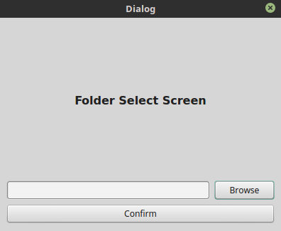
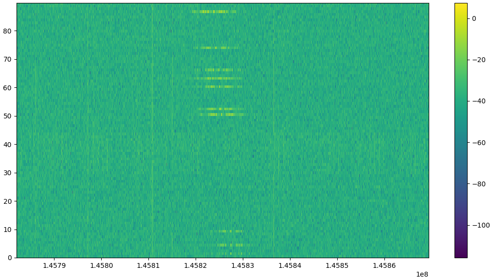
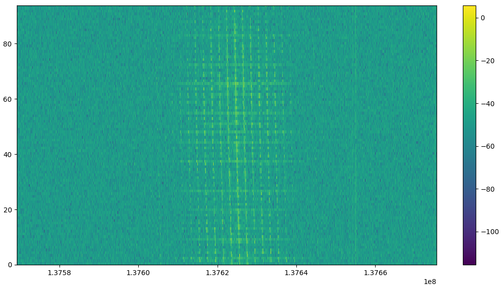
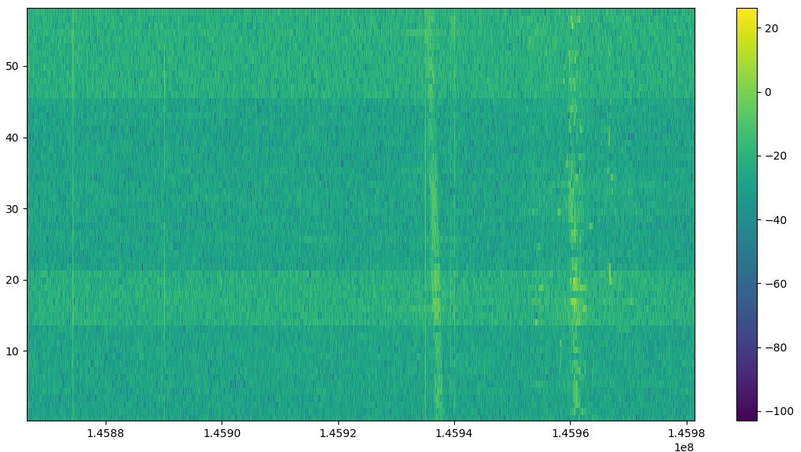
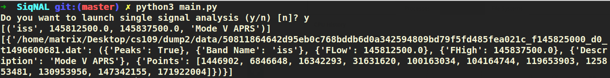
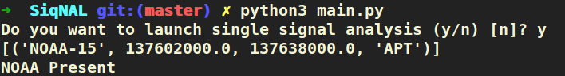
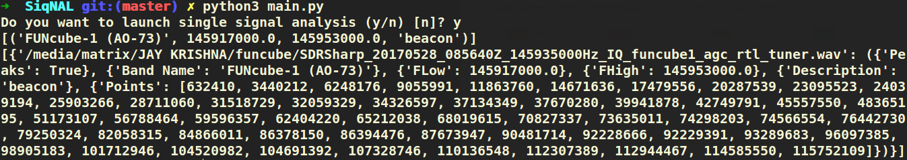

Demonstration¶
To run this project after installing dependencies, open terminal and cd to
same directory that of project and execute main.py file.
python3 main.py
File Import¶
Both formats of SDR recordngs(.dat & .wav) is supported by this project. For importing file you will be prompted for two options
- Single File Analysis
Single file is select for signal detection where one has to specify file location, sampling frequency and centre frequency manually using import screen gui as shown below.

File Import Option
- Folder Import
This is the server version of this project which automatically import and analyzes files sequentially. To import metadata associated with the file JSON file with same name as signal file is required. Any new file added to the folder is also imported and analyzed automatically. Below image shows how to select folder for analysis.
Server Option
Waterfall Diagrams¶
For each signal file analyzed a waterfall image is saved which shows visually presence of signals in different frequency bands as depicted in images below.
A1) ISS Signal Waterfall(Zoomed Spectrum)
B1) NOAA Signal Waterfall(Zoomed Spectrum)
C1) Funcube Signal Waterfall(Zoomed Spectrum)
In the plots A1 one can see transmission made by ISS to it’s ground centre with time region of no transmission. In plot B1 we can see presence of signal at NOAA-15 frequency with doppler shifting. In plot C1 beacon type signal can be observed emitted at small time intervals.
Frequency bands & complex bandpass filtering¶
After importing signal file along with required meta-data our program goes through the database of satellites which is provided in JSON format, does doppler correction and selects those satellites whose frequencies can be present in the signal file. Based upon the frequency band of satellites complex bandpass filter is constructed.
Output¶
Below are the screenshots of output on terminal of ISS, NOAA & Funcube respectively. Only that frequency band is include in which presence of signal is detected.
